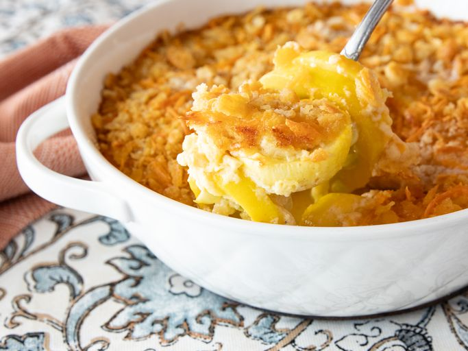

Home
how to make casserole sausage for breakfast

How to Make Breakfast Sausage Casserole
This recipe is super easy to make. You can find the full step-by-step
instructions below, but here's a look at what you can expect when making
this casserole:
ingredients
- 1 (16 ounce) package bulk breakfast sausage
- 1 green onion, chopped
- 1 (16 ounce) package hash brown potatoes
- 2 cups shredded Cheddar cheese
steps
-
Preheat the oven to 325 degrees F (165 degrees C). Grease an 8x11-inch
baking dish.
-
Cook and stir breakfast sausage in a skillet over medium heat until
browned and crumbly, about 10 minutes; drain excess grease.
-
Mix green onion into the sausage and spread into the bottom of the
prepared baking dish.
-
Spread hash brown potatoes in a layer over top; sprinkle with Cheddar
cheese.